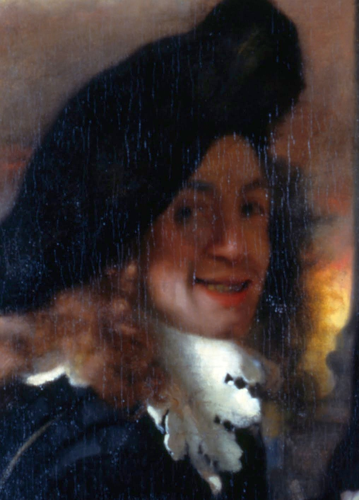

Pigpaint

Johannes Vermeer
Octobre 1632 – 15 Decembre 1675
Quelques oeuvres de cet artiste:
The Milkmaid
View of Delft
Girl Reading a Letter by an Open Window
Né dans une famille de commerçants de Delft,